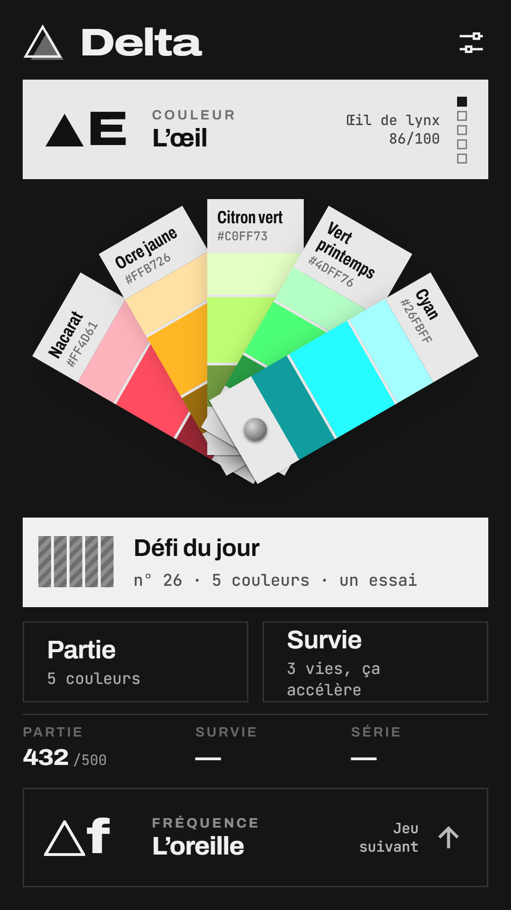

Delta
Tu crois avoir l’œil ? L’oreille ? La main sûre ? Delta mesure l’écart.
Cinq défis de précision, un seul but : un écart nul. Des parties de cinq manches, un défi du jour, des modes survie et des classements pour comparer tes scores.
- CouleurL’œilTrois secondes pour voir. Le reste, c’est ta mémoire.
- FréquenceL’oreilleUne seule écoute. Retrouve-la au hertz près.
- MouvementLe tracéUn rond passe une fois. Refais son trajet, au plus près.
- PlacementLa formeUne forme posée. Replace-la à l’identique, à deux doigts.
- MélodieLa mélodieQuelques notes, une écoute. Rejoue-les sur le clavier.
Gratuit · sans publicité · sans compte à créer · fonctionne sans connexion
